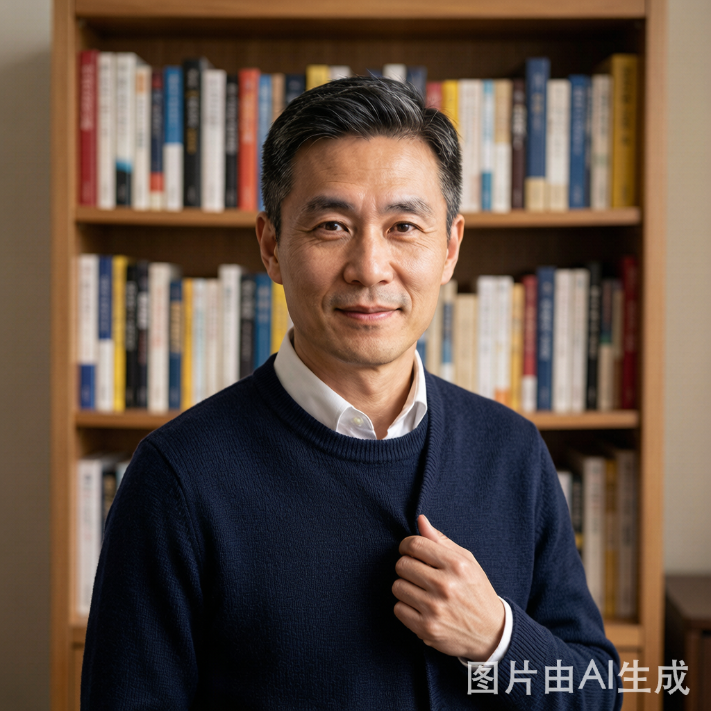
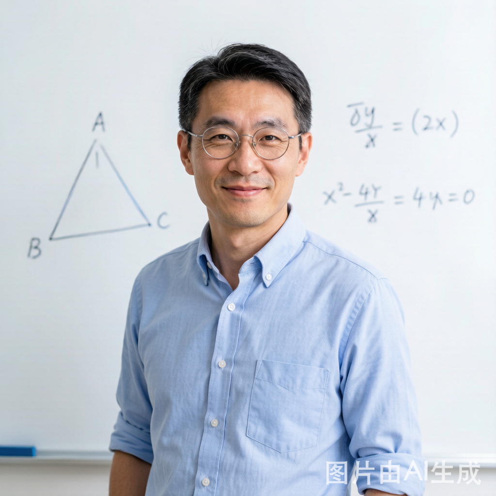
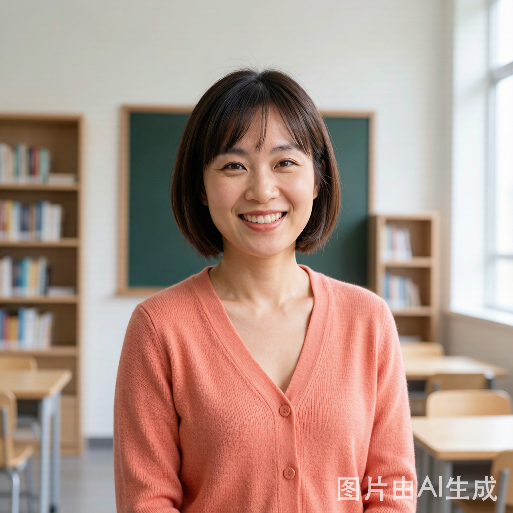
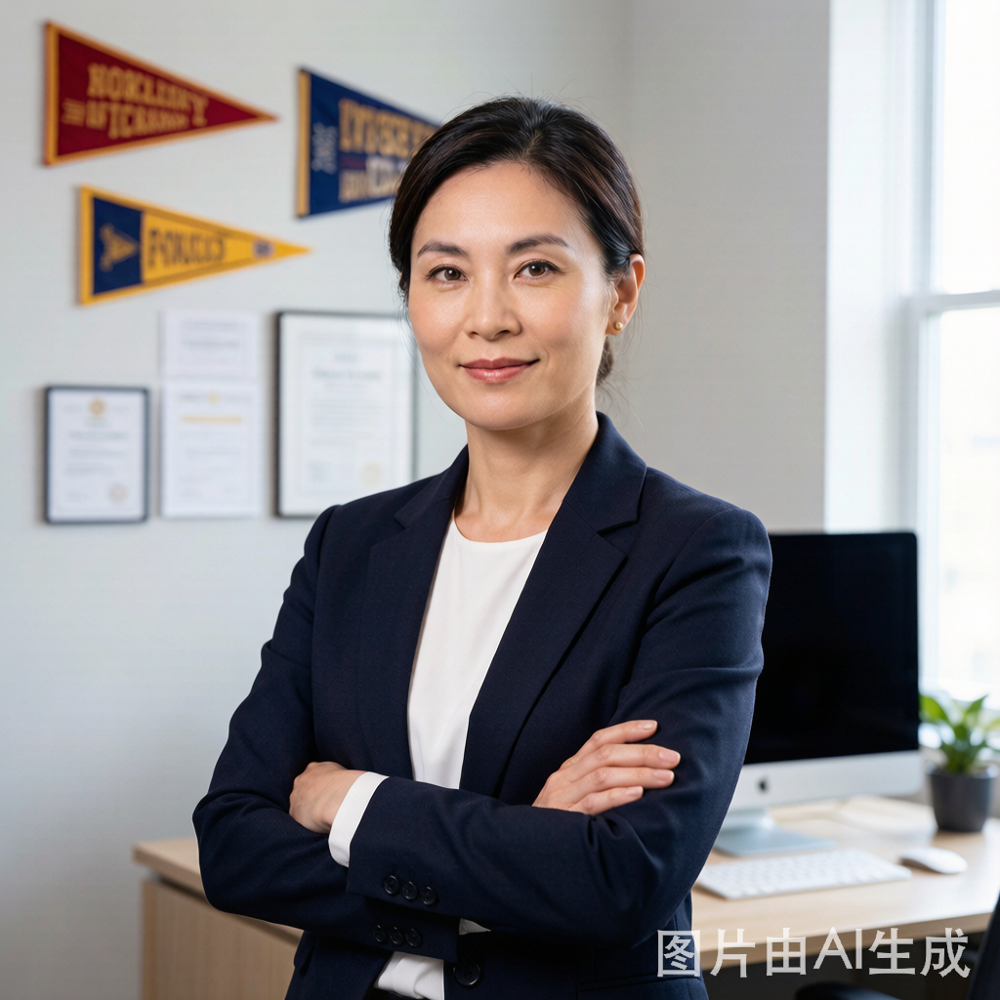

致用学院教研团队 48 人，全部来自浙江省内重点中学一线教学岗位，或毕业于清北复交浙等顶尖高校。
他们的角色不止是"老师"——更是陪伴每位学员三年成长的规划师与教练。

原杭州第二中学语文高级教师，浙江省特级教师。从教 24 年，培养出 14 位省高考语文单科前十。

原学军中学数学竞赛教练，所带学员 5 人入选数学奥林匹克省队，2 人入选国家集训队。

原外国语学校英语教研组长，雅思 8.5，培养学员托福 110+ 累计 47 人。

十年升学规划经验，熟悉强基计划、综合评价、三位一体全流程，累计为 800+ 学员定制升学方案。
以下仅展示部分学科骨干教师。完整 48 人名单欢迎到院索取，
或在咨询时根据孩子的学科需求定向匹配。
原镇海中学物理教师，省物理竞赛优秀辅导员。从教 14 年。
原效实中学化学教研组长，省化学竞赛金牌教练。
原温州中学生物教师，北大生命科学学院背景。
复旦历史系博士，省历史教学比赛一等奖。擅带文科生冲高分。
原学军中学政治教研组长，强基计划面试辅导专家。
原萧山中学地理教师，擅用项目式学习带学员理解地理。
原建兰中学数学教师，初中数学竞赛资深教练。
原采荷中学英语教师，剑桥大学认证教师。
以下是 80% 的家长在咨询前都会问的问题。如果你还有其它疑问，欢迎来电或留言。